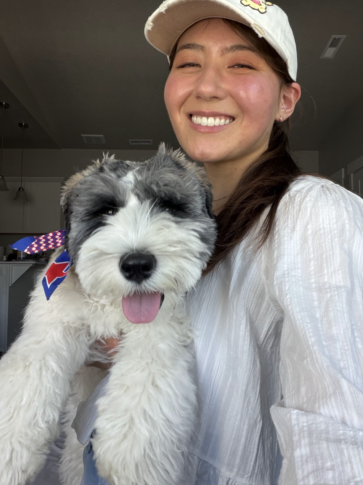
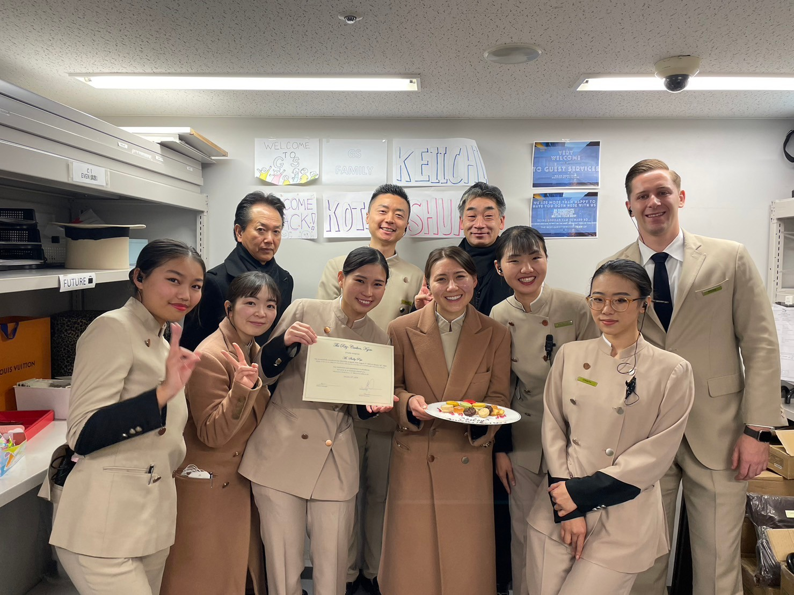
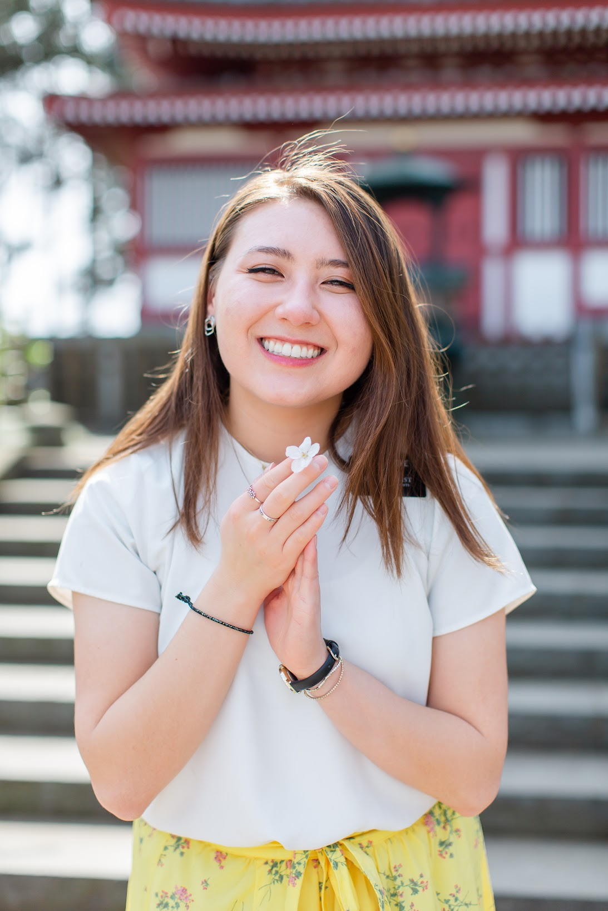
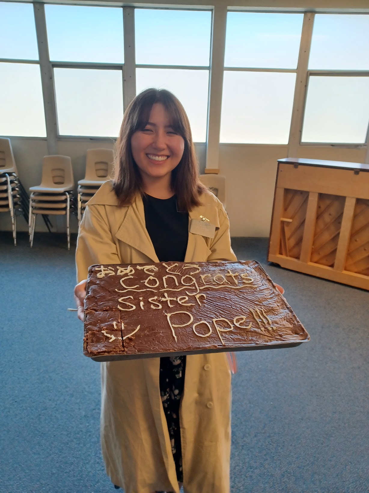
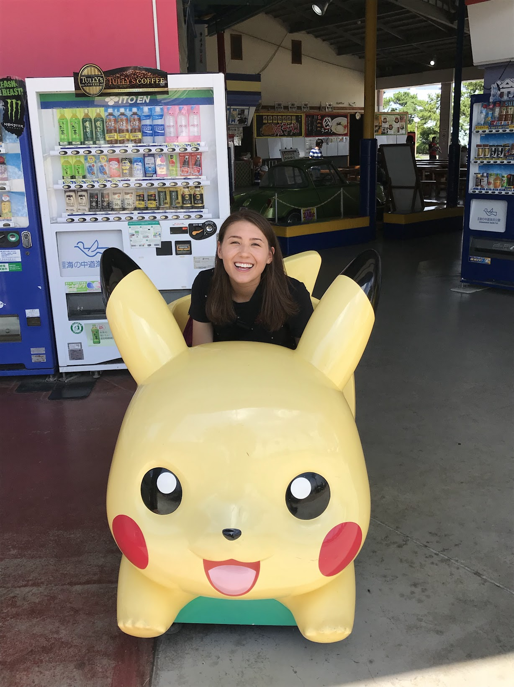

About Me
Hello, my name is Shelby, and this cute fur baby of mine is Milo. I'm a foodie enthusiast and love trying new foods. For that very reason, I was inspired to start running to balance the food intake, only to discover a genuine new passion. I'm a strong believer in furthering knowledge and seeking experience to grow and refine oneself, which is what has lead me to where I am today.


Family Background
I was born and raised in Utah, and come from a growing family of four. My older sister, whom is married, has a baby girl (featured in the photo) and fur baby poodle named Lucy. My dad grew up in Provo, Utah, and my mom grew up in Japan, so I share a strong connection with Japanese culture and have been heavily influenced by it to become the person I am today.
Life-changing Experiences
The Ritz-Carlton, Kyoto

In 2023, I had the grand opportunity to serve a 6-month internship in
Kyoto, Japan at Marriot's Ritz-Carlton as a member part of the Guest Services
team. I met some incredibly wonderful and devoted people. At the time, I had
my sights set on a career in hospitality & tourism. This internship was truly
an experience that tested my capacity, and made me realize how much endurance
and capability I have to grow and learn.
While I was aware Japan had a significantly different work culture, my own
personal experience gave me new perspective about life in Japan. I also realized
perhaps this career path wasn't quite the one I wanted for myself. It was around
this time that I began to test the waters in the tech world and began to learn
coding through free online resources and was inspired for a change in education.
Full-time Mission for the Church of Jesus Christ of Latter-day Saints


In 2019, I departed to serve a full-time mission for the Church of Jesus Christ of
Latter-day Saints in the Tokyo North Mission. For about 9 months I endured hardships
like none other and learned to find joy and strength in the details and little things
that surrounded my daily life as a missionary.
I never knew heartbreak or disappointment so well until the worldwide pandemic hit with
the Corona Virus. Like many others, I was sent home early and was given a couple hard
choices to make: finish my mission elsewhere, wait to go back out, or end my journey early.
In 2021, I chose to finish my mission elsewhere in the Oakland/San Francisco Mission and
learned to overcome new challenges and make room inside myself to love the changes that
took place and adapt to a completely new environment. I was fortunate to work with
incredible people throughout this entire journey and continuously learn from them.
My Heritage
